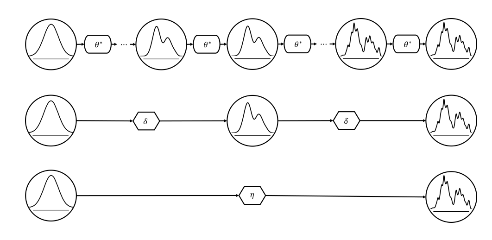

Sampling Process, Part 3 - Design Fundamentals of Diffusion Models
The final stage of Diffusion Models: Conditional generation and accelerating the sampling process.
Sampling Process
This is the third and final process in the design aspects of the Diffusion Model. Here, the trained network learns to generate images by denoising from complete noise to a clear image. The key areas of focus are:
1. Conditional Generation
Guiding the generative process with specific conditions or prompts is essential. Effective guiding mechanisms must be designed to generate high-quality images based on these conditions.
Guiding Mechanisms
These mechanisms correct the unconditional direction based on given conditions.
- Vanilla Guidance:
This straightforward method combines conditions and time in the reverse process for denoising. The model receives a combined input carrying contextual information from the condition and temporal information from the time step.
$$x_{t-1} = f(x_t, c + t)$$
Here, $f$ represents the denoising function, $x_t$ is the noisy image at timestep $t$, and $c + t$ is the combined condition and time step input. The influence of the condition is fixed by the addition process. Since there’s no way to dynamically change this condition with respect to timesteps, the later samples might not conform well as we can't fine tune to a granular level. - Classifier Guidance:
An extra pre-trained classifier is used to change directions.
$$\nabla_x \log p(x/c) = \nabla_x \log p(x) + w \nabla_x \log p(c/x)$$
Here, $\nabla_x \log p(x/c)$ and $\nabla_x \log p(x)$ are conditional and unconditional scores, respectively, $\nabla_x \log p(c/x)$ is the gradient of a classifier, and $w$ is the weight. As the weight increases, the denoising network is more constrained to produce samples.
However, an extra classifier may lead to additional costs when scaling up because the classifier is trained on each noise level. - Classifier-Free Guidance: To avoid the overhead of a classifier, this method uses a mixture of an unconditional model and vanilla guidance. The score from this quickly deviates away from the unconditional score, thus generating samples that satisfy the condition better.
- Learned Mechanism: Instead of relying on manually designed guidance mechanisms, the model can learn how to modify its output better to adhere to the given conditions. This is done by using an additional network that learns to adjust the output of a pre-trained unconditional denoising network.
2. Fast Generation
The sampling procedure is several times slower compared to other generative models. The long generation time is mainly attributed to the number of timesteps. Therefore, reducing the time it takes to generate high-quality images is a primary focus.
Acceleration Design
Reducing the number of timesteps is the main goal of acceleration.
- Truncation: Selects an intermediate timestep $t'$ and truncates the transition chain there. Another network is trained to model $P(t')$. Both training and inference times are reduced, and the timestep to truncate depends on data quality.
- Knowledge Distillation:
Directly distills all timesteps in the teacher network sample into one single student network.
For example, the first model distills two steps to one, then it becomes a teacher and further trains another student model. Hence, after training, a student model can perform as well as the teacher model with a much lower size.
